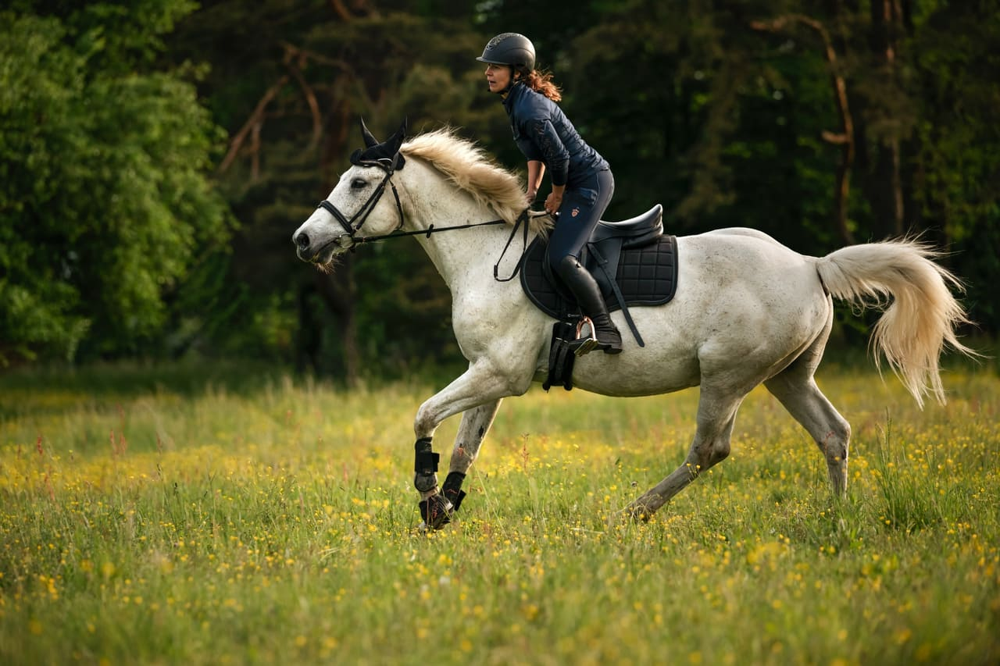
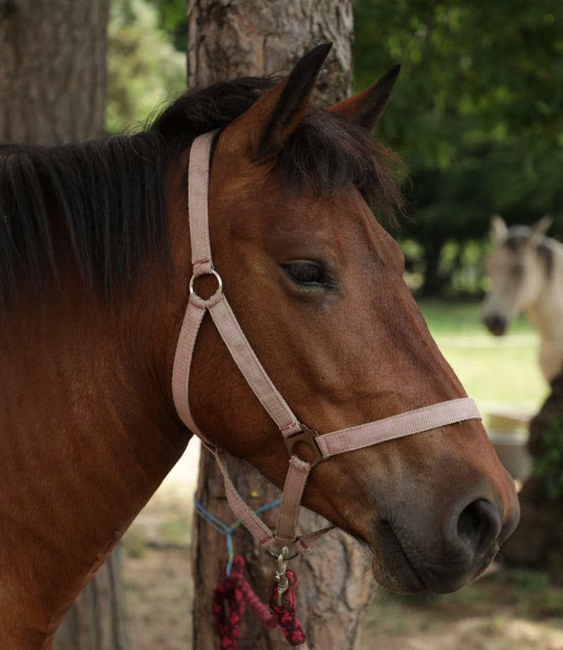

Terapija uz konje. Korak po korak. U vašem ritmu.
Vis Solis provodi hipoterapiju te fizikalnu, okupacijsku i logopedsku terapiju uz pomoć konja, za djecu i odrasle, u Gornjoj Bistri kraj Zagreba.

Četiri terapije, jedan suradnik na četiri noge.
U svakom programu konj je dio terapijskog rada. Odaberite program i pogledajte što obuhvaća.
-
01
Hipoterapija
Terapija u kojoj kretanje konja u hodu postaje dio terapijskog rada.
-
02
Fizikalna terapija uz pomoć konja
Fizioterapijski rad koji se dijelom odvija na konju i uz njega.
-
03
Okupacijska terapija uz pomoć konja
Svakodnevne vještine vježbaju se kroz brigu o konju i aktivnosti uz njega.
-
04
Logopedska terapija uz pomoć konja
Rad na govoru i komunikaciji u poticajnom okruženju, uz konja.
Od prvog upita do prvog termina.
-
Javite nam se
Pošaljite upit preko obrasca ili nas nazovite. Dovoljno je par rečenica o tome što vas zanima.
-
Upoznajemo se
Razgovaramo o potrebama i očekivanjima, a vi upoznajete prostor, tim i konje.
-
Prvi termin
Dogovaramo program i ritam dolazaka koji vam odgovara.
Terapeuti trebaju potvrditi ove korake: je li potrebna liječnička dokumentacija ili uputnica, kako izgleda početna procjena i koliko traje.

Ne mora sve biti terapija.
Uz terapijske programe organiziramo i rekreaciju te druženja s krdom tijekom cijele godine.
- Rekreativno jahanje
- Šetnje na konjima
- Dječji ljetni kampovi
- Obiteljski dani i dani otvorenih vrata
- Advent na konjima
Termine i najave događanja objavljujemo na društvenim mrežama.
Dvanaestak konja, svaki sa svojom naravi.
Upoznajte konje s kojima radimo.



Trebaju imena konja i po jedna rečenica o svakome, te fotografije ostalih konja iz krda.
Vis solis: snaga sunca.
Vis Solis je udruga za terapiju i aktivnosti pomoću konja iz Bistre u Zagrebačkoj županiji, osnovana u kolovozu 2024. godine.
Okupili smo se oko jednostavne ideje: da vrijeme provedeno uz konja može biti i terapija i radost, i da treba biti dostupno onima kojima je najpotrebnije.
Treba priča udruge u nekoliko rečenica, imena i zvanja članova tima te potvrda da se smiju navesti projekti „Siguran korak uz konja” i „Konj za svakoga” i suradnja sa Specijalnom bolnicom za kronične bolesti dječje dobi Gornja Bistra.


Dogovorite termin.
Pošaljite upit ili nazovite. Javit ćemo vam se i zajedno dogovoriti prvi dolazak.
- Telefon
- +385 95 555 4789
- upiti@example.com (privremena adresa, čeka pravu)
- Gdje nas naći
- Bolnička ulica 21, Gornja Bistra
Otvori na karti
Hvala, upit je stigao.
Javit ćemo vam se čim prije. Ako je hitno, nazovite nas na +385 95 555 4789.